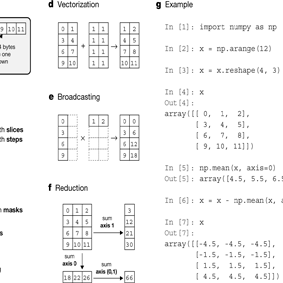
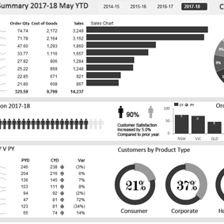

About Me
As Data Analyst with a Passion for Data, Algorithms, and Problem Solving.
My technical prowess, coupled with a strong academic foundation in engineering, statistics, and machine learning, equips me to tackle complex challenges head-on.
I possess extensive experience in the field of Data Analisys, encompassing a deep understanding of both supervised and unsupervised algorithms. My expertise extends to proficiently employing data visualization techniques to effectively communicate the outcomes of my analyses. To drive my data projects forward, I skillfully harness a diverse set of tools including SQL, D3.js, Python, Excel, and Tableau.
Data Analysis
Specialized in dissecting data, my expertise lies in transforming raw numbers into strategic insights. My analyses culminate in comprehensive reports and user-friendly tools that clearly showcase results, trends, and actionable recommendations.
Data Analytics
Elevate your data's worth through my specialized analytics services. Utilizing predictive models and machine learning techniques, I focus on anticipating behaviors and pinpointing the ideal customer base for maximal impact.
Dashboards
Experience real-time insights through intuitive, interactive dashboards. With the convenience of click-through and drill-down functionalities, empower yourself to discover underlying trends and patterns effortlessly.
Crafting dynamic interactive visuals
Showcase your information in an inspiring manner through the use of visual graphics, as opposed to conventional text. I specialize in designing interactive visual displays that serve both internal and public purposes.
Front-end web developer
In my role as a front-end web developer, I collaborate to conceptualize and construct ideal websites catering to beginners and independent professionals. These websites are meticulously optimized to ensure seamless functionality across desktop and mobile devices.
Supporting data-driven ventures
In the realm of data, I offer valuable guidance and mentorship throughout the lifecycle of projects. I provide insights on project advancement and offer coaching to empower data analysts.
Portfolio
MySQL
My MySQL projects encompass designing and optimizing databases, as well as crafting intricate queries to extract meaningful insights. I've specialized in creating efficient data structures and leveraging my SQL querying skills to access, analyze, and manage data effectively. My contributions result in robust and scalable solutions
Go to MySQLPandas & NumPy
In my projects utilizing Pandas and NumPy, I've a deptly harnessed the power of these libraries for data manipulation and analysis. I've engineered efficient data pipelines, conducted in-depth exploratory data analysis, and performed complex mathematical operations with ease. My proficiency in Pandas and NumPy has enabled me to extract meaningful insights and drive data-centric solutions.
See in GitHubExcel
My Excel projects showcase my adeptness in leveraging the software for data organization, analysis, and visualization. I've skillfully created intricate spreadsheets, employed advanced functions, and developed comprehensive macros to automate tasks. Through these projects, I've effectively transformed raw data into actionable insights, demonstrating my proficiency in Excel's diverse capabilities.
See in GitHubTableau

In my Tableau projects, I've demonstrated expertise in crafting dynamic visualizations that turn complex data into easily comprehensible insights. I've harnessed Tableau's capabilities to create interactive dashboards, perform data blending, and drive data-driven decision-making. My proficiency in Tableau allows me to present information in a visually appealing and informative manner, empowering stakeholders to make informed choices.
See in TableauD3.js
My D3.js projects showcase my skills in data visualization and interactive analysis. Through D3.js, I've created dynamic visualizations and dashboards, providing actionable insights and solutions by translating complex data into meaningful narratives.
Go to D3.jsPython
In my Python projects, I've harnessed the versatility of the language to tackle data engineering, analysis, and machine learning tasks. I've developed robust data pipelines, implemented machine learning algorithms, and conducted exploratory data analysis using libraries like Pandas and NumPy. My proficiency in Python has enabled me to deliver data-driven solutions that span the entire data lifecycle.
See in GitHub